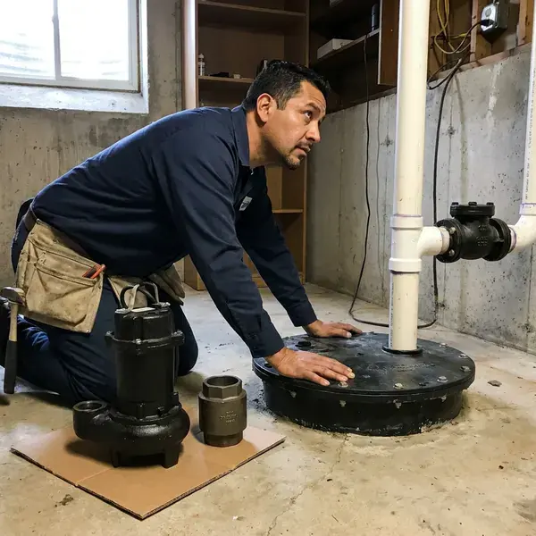

Sewage Ejector Pump Installation in West Valley City, UT
When you need a sewage ejector pump installed in West Valley City, UT, BPK Plumbing provides reliable service for your basement plumbing needs.
- Expert Plumbers
- Prompt, Local Service
- Licensed Utah Plumbers
- Fast, Reliable Installation

Need a Sewage Ejector Pump Installed in West Valley City, UT?
Call BPK Plumbing today for a free estimate and professional service.
Your Go-To for Sewage Ejector Pump Installation in West Valley City, UT
BPK Plumbing installs sewage ejector pumps for any fixture that sits lower than your main sewer or septic line. We set a sealed basin below the floor, install a pump rated for solids, add a check valve and gate valve, and vent the basin through the roof. Every system is tested with water before we leave.
Our expertise includes:
- Proper sizing and wiring for new units.
- Precise pit excavation and basin placement.
- Sealed basin installation with gas-tight lids and separate venting

Additional Plumbing Installation Services in West Valley City, UT
We install water heaters, pumps, lines, and fixtures across West Valley City, UT with precision workmanship that meets every local code.


Customers
Why Choose BPK Plumbing for Sewage Ejector Pump Installation in West Valley City, UT?
Sewage ejector pumps handle raw waste, so a poor installation leads to backups, odors and expensive cleanup. We install sealed, vented systems that move waste reliably and keep sewer gas out of your home.
- Clean & Tidy, Our technicians keep a clean workspace and leave your property tidy after installation.
- Local Expertise, We understand Utah building codes and soil conditions, ensuring a compliant and durable installation.
- System Sizing, Our experts accurately size pumps and basins to meet your home's wastewater volume, preventing overload or inefficiency.
Citywide Coverage
We install sewage ejector pumps across West Valley City, from older homes with basement bathrooms to new custom builds with lower-level suites. Our plumbers handle basins, pumps and venting for each layout.
Experienced Team
The team understands basin sizing, venting rules and discharge routing to the building drain. They also coordinate electrical and alarm wiring with your electrician.
Safety-First Approach
Sewer gas contains hydrogen sulfide and methane, so every basin we install is sealed and vented through the roof as code requires. We never use air admittance valves on ejector basins where they are not permitted.
Trusted Certified West Valley City Plumbing Services Professionals
At BPK Plumbing, we take pride in providing licensed, certified plumbing services throughout West Valley City, UT. Backed by recognized industry credentials, our experienced plumbers combine technical skill with genuine customer care. Whether it is repair, installation, or maintenance, we follow strict safety and quality standards to deliver long-lasting results you can trust.
Call Us Now PHCC Plumbing Contractor Recognition
PHCC Plumbing Contractor Recognition Better Business Bureau (BBB) Accreditation
Better Business Bureau (BBB) Accreditation Angi Certified Pro
Angi Certified Pro ISO 9001 Quality Management Certification
ISO 9001 Quality Management CertificationTrusted Sewage Ejector Pump Installation Services in West Valley City, UT
Laundry and Wet Bar Ejector Pumps in West Valley City, UT
Below-grade laundry rooms and wet bars produce gray water that still needs to be lifted to the sewer line. A smaller ejector or laundry tray pump can handle washer discharge and sink drainage. We install a lint filter where needed to guard the pump. These systems are compact and can often be installed without major floor demolition.

Emergency Sewage Ejector Pump Replacement in West Valley City
A failing sewage ejector pump can lead to immediate and messy problems in your West Valley City home or business. BPK Plumbing offers emergency replacement for sewage ejector pumps. If your current pump has completely failed, is overflowing or shows severe signs of malfunction, our rapid response team can diagnose the issue and install a new unit promptly and professionally. We prioritize emergencies to restore your plumbing as soon as possible, minimizing damage and inconvenience.
Cost-Effective Sewage Ejector Pump Upgrades in West Valley City, UT
If your existing sewage ejector pump is old, inefficient or undersized for your current needs, BPK Plumbing offers cost-effective upgrade options in West Valley City, UT. Upgrading to a more powerful or energy-efficient model can save you money on utility bills and provide more peace of mind. We assess your current system and recommend modern pumps with features like integrated alarms or longer warranties, making a smart investment that improves your home's plumbing and prevents future breakdowns. This can be more affordable than repeated repairs.
Ejector Pump Alarms and Backup Options in West Valley City
A high water alarm is essential on any ejector system because a failure can quickly lead to sewage backup. We install audible alarms or Wi-Fi monitors that send alerts to your phone. Spring snowmelt can raise groundwater and creek levels in Utah, sometimes pushing water into basements that stay dry the rest of the year. Storms can knock out power, so we can discuss generator connections for critical installations. These safeguards are cheap compared with sewage cleanup.
Basement Bathroom Ejector Systems in West Valley City
Basement bathrooms sit below the building sewer, so toilets, showers and sinks drain into a sealed basin instead of flowing by gravity. We excavate the floor, set a basin usually 30 to 50 gallons and connect each fixture drain. A solids-handling pump lifts waste up and into the main drain line. The basin lid is sealed and vented to keep odors from escaping.
Zoeller Ejector Pump Installation in West Valley City, UT
When you need a dependable Zoeller ejector pump installed in West Valley City, UT, BPK Plumbing is your go-to plumbing expert. Zoeller pumps are known for their durability and efficiency, making them a popular choice for homeowners and businesses alike. Our team handles the complete installation of Zoeller sewage ejector pumps, including pit setup, discharge piping and electrical connections. We make sure your Zoeller pump operates quietly and effectively, giving you peace of mind for your below-grade plumbing.
Residential Sewage Ejector Pump Installation in West Valley City
BPK Plumbing focuses on installing sewage ejector pumps for residential properties in West Valley City. These pumps are crucial for basement bathrooms, laundry rooms or any plumbing fixtures located below the main sewer line. We make sure the pump's capacity matches your household's demands, preventing potential backups. Our service includes selecting the appropriate basin size, setting up proper venting and making solid electrical connections. We work with common residential pump brands like Liberty and Zoeller, known for their reliability.

Ejector Pump Installation Cost Comparison in West Valley City, UT
Replacing a pump in an existing basin is the least expensive option. A new system with basin, floor excavation, venting and electrical costs more but enables a full below-grade bathroom. Macerating toilets often cost less upfront but have more limitations. We give you a detailed quote so you can compare a standard ejector, grinder pump and upflush system together.
Sewage Ejector Pump Installation Near Me in West Valley City, UT
Our commitment to the West Valley City community means we understand the local plumbing infrastructure and requirements for below-grade installations. Trust BPK Plumbing for dependable, code-compliant sewage ejector pump solutions close to home.
No matter where you are in West Valley City, UT, our professional plumbing team is ready to provide quality sewage ejector pump installation. We are committed to serving our local community with integrity and high-quality workmanship, so your plumbing needs are met efficiently.
BPK Plumbing at a Glance
- Fully licensed plumbing team covering West Valley City, UT
- 24/7 emergency service with same-day scheduling
- Clear written estimates, no hidden fees
- 4.8-star rated by 470+ Utah customers
West Valley City Map
West Valley City Information
- Population
- 134,470
- Area codes
- 801/385/435
- Service area
- West Valley City and communities within 40 miles
- Nearby
- Taylorsville, West Jordan, Murray, Salt Lake City
Hillside lots, walkout basements and lower-level suites frequently sit below the main sewer line, making a properly sealed and vented sewage ejector the only way to drain those fixtures.
Expert Services
Trust our professionals for reliable BPK Plumbing solutions in West Valley City, UT.
Our Specialized Plumbing Services in West Valley City, UT
At BPK Plumbing, we provide a complete range of plumbing services across West Valley City, UT. From leak detection to full system installations, our team ensures fast, precise, and affordable service for both residential and commercial properties. Explore our core services below:


How Our Ejector Pump Installation Process Works in West Valley City, UT
We follow a clear process so your ejector system is sized correctly, installed to code and ready for everyday use.
Request a Quote
Call (385) 543-4073 to describe your fixtures and layout or report a pump problem. We schedule a visit and give you a written quote.
Install the System
We install the basin, pump, check valve, shutoff and venting, then connect each fixture. Electrical and alarm wiring are arranged as needed.
Test and Inspect
We run water through the system to confirm proper cycling and discharge. Inspection is scheduled when a permit is required.
Frequently Asked Questions About Sewage Ejector Pump Installation in West Valley City
Replacing a pump in an existing basin typically costs $900 to $2,000. A new ejector system with basin, venting and floor work typically ranges from $2,500 to $6,000 or more.
We recommend having your sewage ejector pump inspected annually, especially if it is in a high-use area. Regular inspections can identify potential issues early, extend the life of your pump and prevent unexpected failures and costly backups. This is especially important for older units.
Regular maintenance for a sewage ejector pump involves periodically checking the basin for debris, confirming the check valve works correctly and testing the float switch. It is also wise to avoid flushing non-biodegradable items. BPK Plumbing offers maintenance services to keep your pump running efficiently and prevent unexpected breakdowns.
With proper installation and regular maintenance, a high-quality sewage ejector pump can last 7 to 15 years. Factors such as usage frequency, the type of waste it handles and water quality can influence its lifespan. Annual inspections can help extend its longevity.
Installing a sewage ejector pump is a complex job that involves plumbing, electrical and sometimes excavation work. It requires specialized knowledge to get sizing, venting and code compliance right. We firmly recommend hiring a licensed professional like BPK Plumbing to avoid costly errors, safety hazards and potential code violations.
Most ejector pumps last 7 to 10 years with normal use. Flushing wipes or other non-flushable items can shorten that life considerably.
A sewage ejector pump is designed to handle solid waste and wastewater from plumbing fixtures below the main sewer line, like toilets and sinks, discharging it into the sewer system. A sump pump, in contrast, removes groundwater from a basement or crawl space, only handling clear water to prevent flooding. They serve different purposes for different types of water.
Constant running, a sounding alarm, sewage odors, gurgling drains and slow drainage are typical signs. Act fast to avoid a backup.
What People Are Saying About Our Plumbing Experts?

Daniel K.
A pipe burst at 11 pm and they actually answered. The plumber showed up within the hour, shut everything down, and had us back to normal the next morning. Could not ask for more.
Emergency Plumbing · South Jordan, UT
Emily R.
I called BPK Plumbing for plumbing repair, and the technician was fast, polite, and thorough. They explained the problem clearly and fixed it the same day. I will definitely hire them again. Highly recommended!
Plumbing Repair · West Valley City, UT
Laura S.
I scheduled a water heater replacement, and the team made the process smooth and affordable. The new unit works perfectly, and they cleaned up after completing the job.
Water Heater Replacement · West Valley City, UT
Patricia H.
We had a slab leak that two other companies could not find. BPK Plumbing located it in under an hour, explained our options, and the price matched the quote to the dollar.
Slab Leak Repair · Millcreek, UTSofia M.
Two new toilets installed in one visit, no mess left behind, and the tech even adjusted a faucet he noticed was dripping. Fair pricing and really friendly.
Toilet Installation · South Jordan, UT
Mark T.
When our office needed drain cleaning, BPK Plumbing provided quick, reliable service. The plumber arrived on time and made sure every drain flowed perfectly before leaving. Very satisfied.
Drain Cleaning · West Valley City, UT